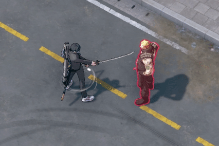
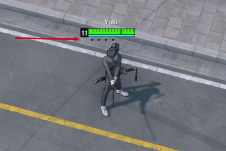
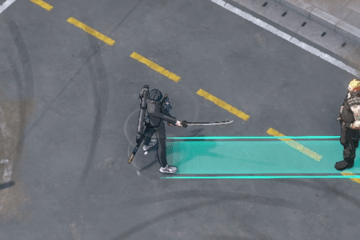
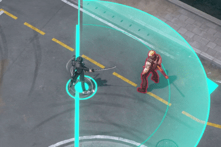
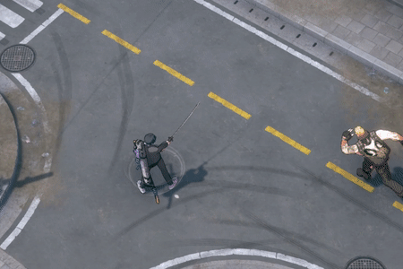
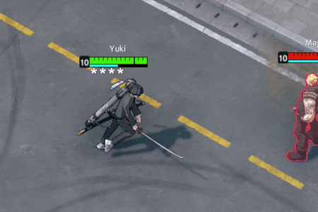

Yuki's next normal attack deals additional damage and reduces the movement speed of enemies.
Consuming a cufflink stuns enemies.

Passive: reduces cooldown of Button Up each time Yuki deals damage.
Yuki straightens up his outfit and reduces the cooldown of Dashing Gentleman. While using Button Up, his defense is increased. When Button Up is complete, he gains cufflinks.

Yuki dashes in the targeted direction, dealing damage to the first enemy hit. Enemies hit are disarmed, disabling their normal attacks for a certain time and reducing the cooldown of Dashing Gentleman.

Yuki unsheaths his sword and slashes an area in front of him, dealing an initial damage to enemies and leaving a mark, reducing movement speed of enemies.
The mark explodes after Yuki sheathes his sword, dealing true damage equal to a percent of the enemy's max HP.

Yuki stores cufflinks as a resource. Upon damaging an enemy, he consumes a stored cufflink, dealing additional true damage.
Yuki recovers cufflinks every few seconds while out of combat.
Activating Button Up will refill all of his cufflinks.